Tư thế
Bộ 43 tư thế yoga cho bé: vừa tập vừa hóa thân

Trẻ con học yoga nhanh nhất khi được hóa thân: thành ngôi sao, chú cua, hải cẩu hay bông hoa sen. Đây là 43 tư thế cô Sophia dùng trong các lớp yoga trẻ em, sắp theo thứ tự một buổi tập: đứng vươn cao, rồi ngồi, rồi nằm thư giãn.
💡 Cách tập: mỗi tư thế giữ 3 đến 5 hơi thở. Đọc to câu hô 🗣️ để bé nhập vai. Không cần bé làm đúng hoàn toàn, quan trọng là bé vui và an toàn. Ảnh có tên tiếng Anh để thầy cô dạy song ngữ.
🌟 Phần 1: Đứng và vươn cao

Ngôi sao lấp lánh
Star pose
Cách làm: Đứng dang rộng hai chân, hai tay giơ sang ngang như năm cánh sao.
Lợi ích: Mở ngực, khỏe chân, bé đứng vững hơn.
🗣️ “Ngôi sao ơi, tỏa sáng thật to nào!”

Cây non đón gió
Tree pose
Cách làm: Đứng trên một chân, bàn chân kia đặt lên cổ chân hoặc bắp chân, hai tay dang như cành cây.
Lợi ích: Rèn thăng bằng và sự tập trung.
🗣️ “Gió thổi nhẹ, cây vẫn đứng thật vững.”

Cây dừa vươn cao
Tree pose, arms up
Cách làm: Đứng một chân, bàn chân kia đặt vào bắp chân, hai tay chắp lại giơ cao qua đầu.
Lợi ích: Rèn thăng bằng, tập trung, khỏe chân.
🗣️ “Cây dừa vươn cao đón ánh nắng!”
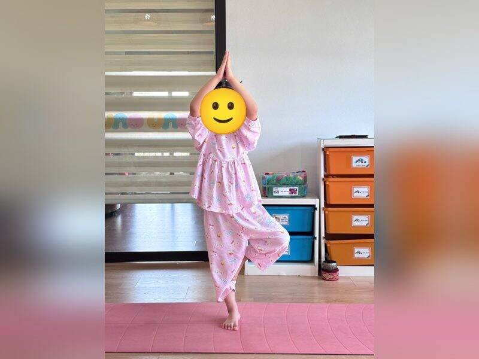
Cây thông Noel
Tree pose, hands up
Cách làm: Đứng một chân, bàn chân kia đặt vào bắp chân hoặc đùi, hai tay chắp lại giơ cao thành ngọn cây thông.
Lợi ích: Rèn thăng bằng, tập trung, khỏe chân.
🗣️ “Cây thông đứng thật vững để treo quà nhé!”

Chiến binh dũng cảm
Warrior pose
Cách làm: Bước một chân dài ra trước, gập gối trước, chân sau thẳng, hai tay vươn cao lên trời.
Lợi ích: Khỏe chân, khỏe lưng, bé thấy tự tin hơn.
🗣️ “Hít thật sâu, mình là chiến binh dũng cảm!”

Mặt trăng lưỡi liềm
Low lunge
Cách làm: Bước một chân ra trước, gập gối, gối sau đặt xuống thảm, hai tay vươn cao, ngực mở.
Lợi ích: Mở hông, kéo giãn đùi trước, khỏe chân.
🗣️ “Vươn cao như vầng trăng khuyết trên trời!”
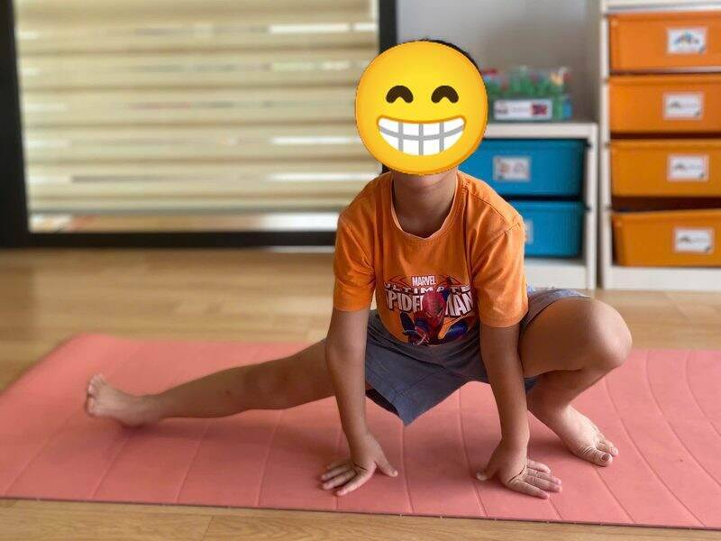
Ninja trượt ngang
Side lunge
Cách làm: Ngồi xổm trên một chân, duỗi thẳng chân kia sang ngang, hai tay chống sàn.
Lợi ích: Kéo giãn đùi trong, khỏe chân, rèn thăng bằng.
🗣️ “Ninja trượt sang trái, trượt sang phải!”

Cánh buồm tam giác
Triangle pose
Cách làm: Đứng dang chân, nghiêng người, một tay chạm sàn hoặc ống chân, tay kia giơ thẳng lên trời.
Lợi ích: Kéo giãn hai bên sườn và đùi.
🗣️ “Cánh buồm căng gió, thuyền ra khơi!”

Đà điểu giấu đầu
Forward fold
Cách làm: Đứng thẳng, cúi gập người, thả lỏng đầu, hai tay chạm mũi chân.
Lợi ích: Kéo giãn lưng và bắp chân, giúp bé dịu lại.
🗣️ “Đà điểu ngại ngùng, giấu đầu đi nào!”

Thác nước đổ
Standing forward fold
Cách làm: Đứng chụm chân, cúi gập người từ hông, thả đầu và tóc rủ xuống, hai tay chạm mũi chân.
Lợi ích: Kéo giãn lưng và mặt sau chân, giúp bé bình tĩnh.
🗣️ “Ào ào… thác nước đổ xuống thật mát!”

Ngó trời lộn ngược
Wide-leg fold
Cách làm: Đứng dang rộng chân, cúi gập người, hai tay chống sàn, nhìn ra phía sau qua giữa hai chân.
Lợi ích: Kéo giãn đùi, lưng; máu lên não giúp bé tỉnh táo.
🗣️ “Ơ kìa, thế giới lộn ngược rồi!”
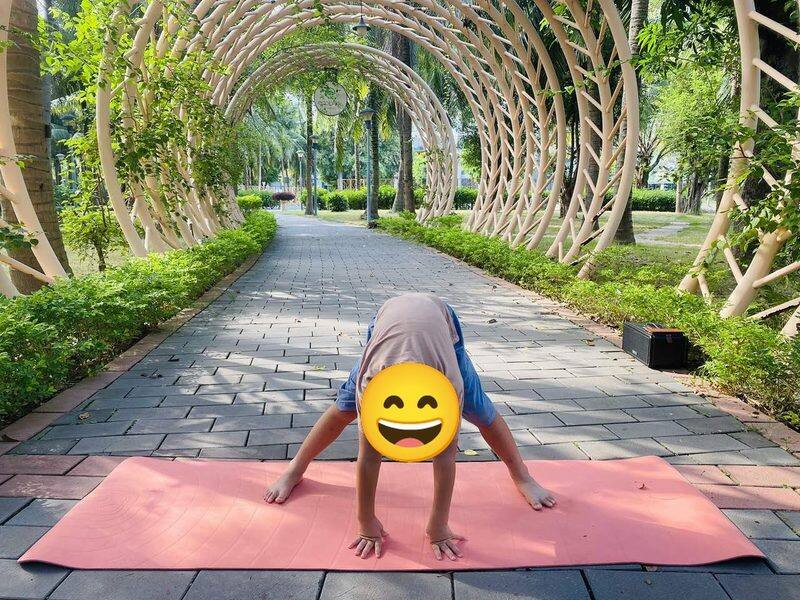
Chú chó vươn vai
Downward dog
Cách làm: Hai tay và hai chân chống sàn, đẩy mông lên cao, đầu thả lỏng giữa hai tay.
Lợi ích: Khỏe tay, vai, kéo giãn toàn thân.
🗣️ “Gâu gâu! Chó con vừa ngủ dậy vươn vai.”

Kim tự tháp
Downward dog / Pyramid
Cách làm: Hai tay chống sàn, đẩy mông lên thật cao, gót chân hướng xuống sàn, tạo hình tam giác.
Lợi ích: Khỏe tay vai, kéo giãn lưng và bắp chân.
🗣️ “Xây kim tự tháp thật cao, thật vững!”
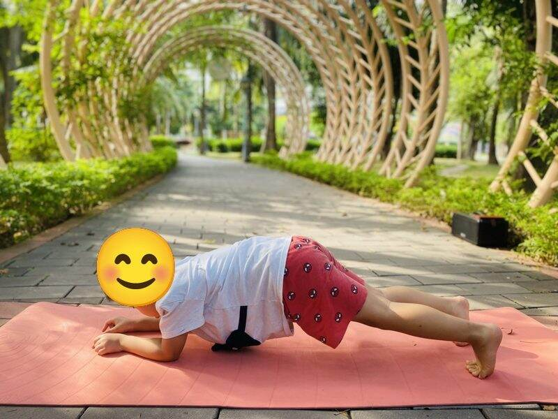
Cá heo nhảy sóng
Dolphin pose
Cách làm: Chống hai cẳng tay xuống thảm, nâng hông lên, nhón trên mũi chân.
Lợi ích: Khỏe vai và cơ bụng.
🗣️ “Cá heo lấy đà, chuẩn bị nhảy qua sóng!”
🦋 Phần 2: Ngồi và quỳ

Cánh cổng thần kỳ
Gate pose
Cách làm: Quỳ một gối, duỗi chân kia sang ngang, một tay đặt sau đầu, nghiêng người nhẹ.
Lợi ích: Kéo giãn hông và hai bên sườn.
🗣️ “Mở cánh cổng thần kỳ, mình đi đâu nhỉ?”

Ngọn nến lung linh
Candle / Kneeling reach
Cách làm: Quỳ ngồi trên gót chân, lưng thẳng, hai tay giơ cao chắp lại như ngọn nến.
Lợi ích: Kéo dài cột sống, mở vai, giúp bé ngồi thẳng.
🗣️ “Ngọn nến cháy sáng, đứng thật thẳng nào!”

Chú bò ụm bò
Cow pose
Cách làm: Chống tay và gối, võng lưng xuống, ngẩng đầu nhìn lên.
Lợi ích: Mở ngực, làm mềm cột sống.
🗣️ “Ụm bò! Bò con ngẩng đầu ngắm trời.”

Mèo con ngắm trăng
Kneeling cobra
Cách làm: Chống hai tay và hai gối, đẩy ngực về phía trước, ngẩng đầu nhìn lên cao.
Lợi ích: Mở ngực, khỏe tay, làm mềm cột sống.
🗣️ “Meo meo, mèo con ngẩng lên ngắm trăng.”

Cún con duỗi lưng
Puppy pose
Cách làm: Quỳ bốn chân, giữ hông trên gối, trượt hai tay ra xa phía trước, hạ ngực và trán xuống thảm.
Lợi ích: Kéo giãn lưng, vai và cánh tay, giúp bé thư giãn.
🗣️ “Cún con vươn vai thật dài sau giấc ngủ!”

Gà con vỗ cánh
Chicken wings
Cách làm: Ngồi xếp bằng, đặt đầu ngón tay lên vai, khép mở khuỷu tay như đôi cánh.
Lợi ích: Mở vai, giúp bé ngồi thẳng lưng.
🗣️ “Cục ta cục tác, gà con vỗ cánh!”

Bướm xinh vỗ cánh
Butterfly pose
Cách làm: Ngồi, chạm hai lòng bàn chân vào nhau, nhịp nhẹ hai đầu gối, hai tay dang rộng.
Lợi ích: Mềm hông, bé ngồi thẳng và vui vẻ.
🗣️ “Bướm bay qua vườn hoa, vỗ cánh nhẹ thôi.”
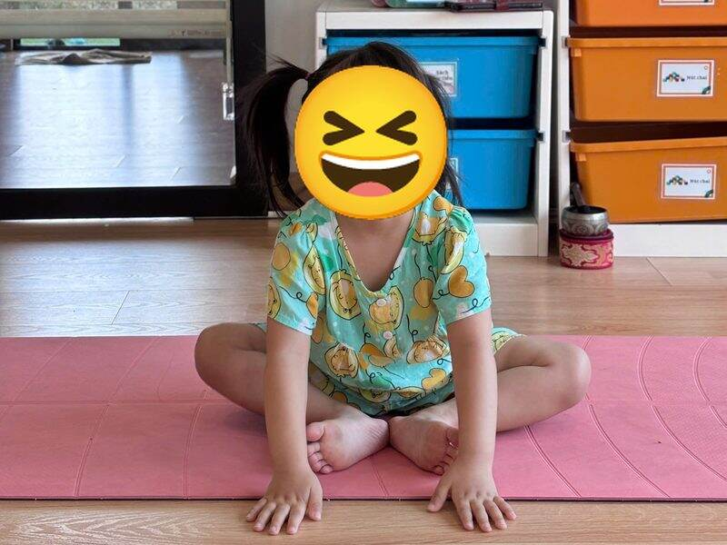
Bướm nghỉ cánh
Resting butterfly
Cách làm: Ngồi, chạm hai lòng bàn chân vào nhau, hai tay chống thảm phía trước, ngồi yên thở nhẹ.
Lợi ích: Mở hông, giúp bé ngồi yên và tập trung.
🗣️ “Bướm bay mỏi rồi, đậu xuống nghỉ một chút.”

Ếch con ngồi chờ
Frog pose
Cách làm: Ngồi, mở rộng hai đầu gối, hai bàn tay chống sàn giữa hai chân, mắt nhìn phía trước.
Lợi ích: Mở hông, khỏe cổ chân.
🗣️ “Ộp ộp! Ếch con ngồi chờ bắt muỗi.”
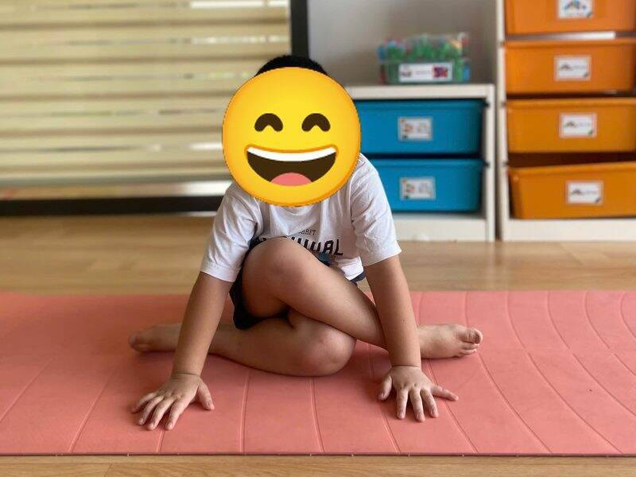
Chiếc nơ xinh
Cow face legs
Cách làm: Ngồi, bắt chéo hai chân để gối chồng lên nhau như chiếc nơ, hai tay chống sàn phía trước.
Lợi ích: Mở hông, giúp bé ngồi vững.
🗣️ “Thắt chiếc nơ thật xinh lên quà tặng!”
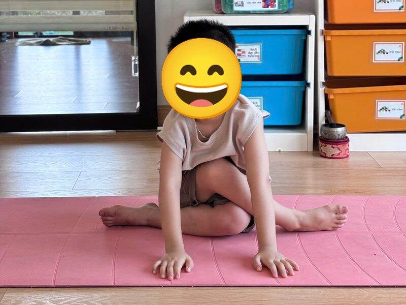
Nút thắt dây giày
Shoelace pose
Cách làm: Ngồi, bắt chéo hai chân để gối này chồng lên gối kia, hai bàn tay chống thảm phía trước.
Lợi ích: Mở hông, kéo giãn mông và đùi ngoài.
🗣️ “Thắt dây giày thật chặt rồi mới đi chơi nào!”

Chìa khóa xoay
Seated twist
Cách làm: Ngồi duỗi một chân, chân kia co lên, một tay chống phía sau, xoay người nhẹ về phía tay chống.
Lợi ích: Xoay nhẹ cột sống, hỗ trợ tiêu hóa.
🗣️ “Xoay chìa khóa, mở cánh cửa bí mật!”

Bánh mì kẹp
Sandwich / Forward fold
Cách làm: Ngồi duỗi hai chân, cúi người về phía trước, hai tay với về phía bàn chân. Gối hơi co cũng được.
Lợi ích: Kéo giãn lưng và mặt sau chân, giúp bé bình tĩnh.
🗣️ “Kẹp thật nhiều nhân vào bánh mì nào!”
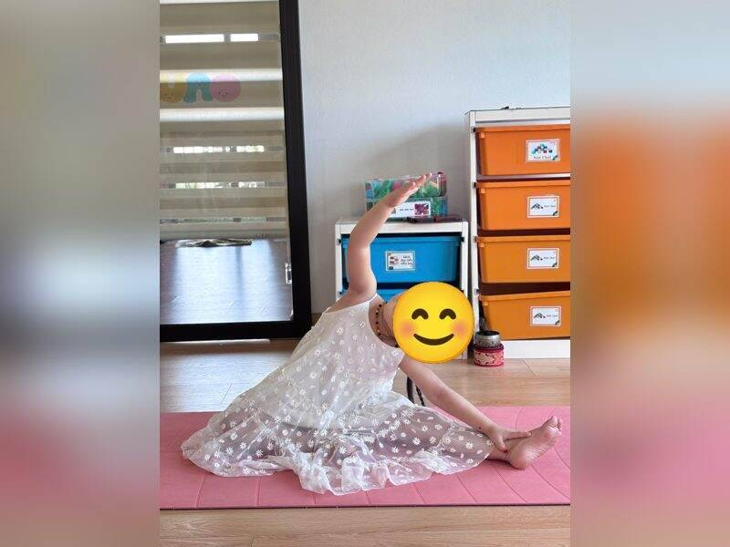
Cầu vồng bảy sắc
Seated side stretch
Cách làm: Ngồi duỗi một chân, tay cùng bên với xuống bàn chân, tay kia vòng qua đầu nghiêng người thành cầu vồng.
Lợi ích: Kéo giãn hai bên sườn và mặt sau chân.
🗣️ “Cầu vồng hiện ra sau cơn mưa!”

Chiếc thuyền nhỏ
Little boat
Cách làm: Ngồi co gối, hai tay chống phía sau hoặc ôm gối, ngả nhẹ người ra sau. Bé nào giỏi thì nhấc bàn chân lên.
Lợi ích: Khỏe cơ bụng, rèn thăng bằng khi ngồi.
🗣️ “Thuyền ơi, lắc lư trên sóng nhé!”
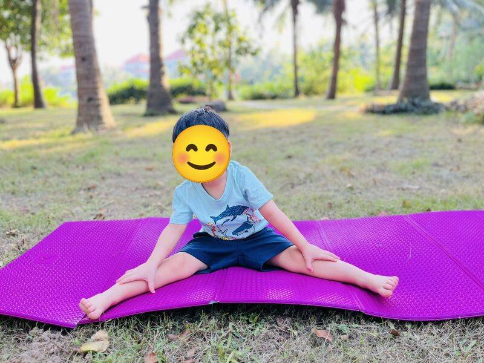
Chiếc quạt xòe
Wide-leg seat
Cách làm: Ngồi duỗi hai chân thật rộng, hai tay đặt lên đùi, lưng thẳng.
Lợi ích: Kéo giãn đùi trong, giúp bé ngồi thẳng lưng.
🗣️ “Quạt ơi xòe ra, gió mát ùa về!”

Trăng khuyết nghiêng mình
Seated side bend
Cách làm: Ngồi duỗi một chân, chân kia co lại, vươn một tay qua đầu và nghiêng người về phía chân duỗi.
Lợi ích: Kéo giãn sườn, giúp bé thở sâu hơn.
🗣️ “Mặt trăng nghiêng mình chào các bạn.”

Chú cua đỏ
Crab / Table pose
Cách làm: Ngồi, hai tay chống sau, hai bàn chân đặt trên thảm, nâng mông lên thành mặt bàn.
Lợi ích: Khỏe tay, khỏe lưng và mông.
🗣️ “Cua bò ngang, cua bò ngang!”

Ngôi sao nghiêng
Side star
Cách làm: Chống một tay xuống thảm, duỗi thẳng hai chân sang bên, tay kia vươn cao lên trời.
Lợi ích: Khỏe tay, vai, cơ bụng hai bên; rèn thăng bằng.
🗣️ “Ngôi sao nghiêng mình chào cả lớp!”
🐍 Phần 3: Nằm và thư giãn

Rắn con xì xì
Cobra pose
Cách làm: Nằm sấp, hai tay chống dưới vai, nâng nhẹ ngực lên, mắt nhìn phía trước.
Lợi ích: Khỏe lưng, mở ngực.
🗣️ “Xì xì xì… rắn con ngóc đầu dậy.”

Hải cẩu tắm nắng
Seal pose
Cách làm: Nằm sấp, duỗi thẳng hai tay chống sàn, ngực mở, quay đầu nhìn quanh.
Lợi ích: Khỏe tay, khỏe lưng.
🗣️ “Hải cẩu nằm phơi nắng, vỗ tay nào!”
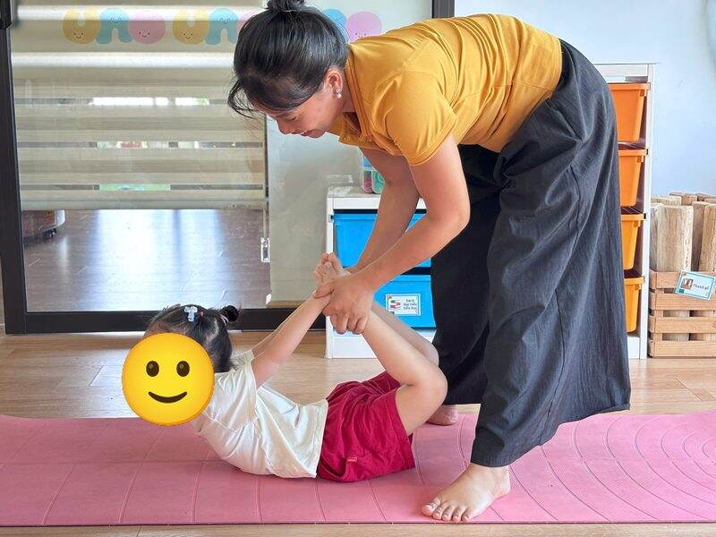
Cánh cung thần
Bow pose
Cách làm: Nằm sấp, co gối, hai tay nắm cổ chân, nâng ngực và chân lên thành cánh cung. Bé mới tập có thể nhờ cô đỡ nhẹ như trong ảnh.
Lợi ích: Khỏe lưng, mở ngực và vai.
🗣️ “Kéo căng cánh cung, bắn mũi tên thật xa!”

Cá sấu ngủ trưa
Crocodile rest
Cách làm: Nằm sấp, hai tay duỗi về phía trước, một chân co sang bên, áp má xuống thảm.
Lợi ích: Thả lỏng lưng và hông, giúp bé nghỉ ngơi giữa buổi tập.
🗣️ “Cá sấu no bụng rồi, ngủ một giấc thôi!”

Cây cầu vồng
Bridge pose
Cách làm: Nằm ngửa, co gối, đặt bàn chân sát mông, nâng hông lên cao, hai tay để dọc thân.
Lợi ích: Khỏe lưng, mông và đùi.
🗣️ “Cầu vồng nhô lên, các bạn xe chui qua!”
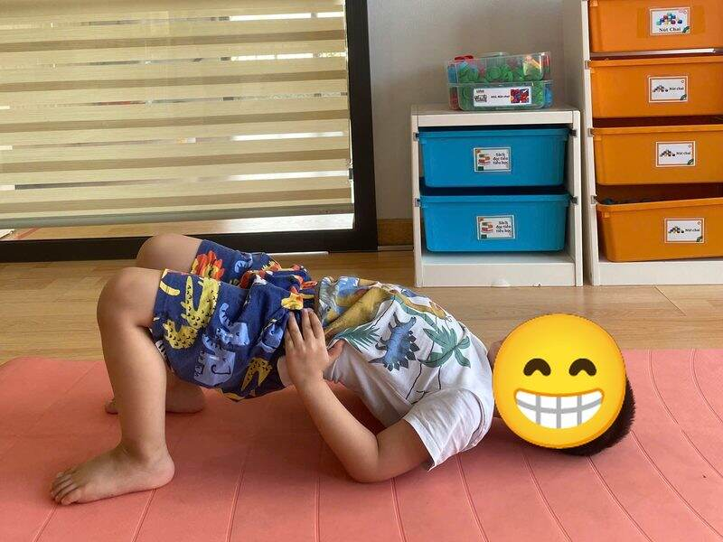
Đường hầm xe lửa
Supported bridge
Cách làm: Nằm ngửa, co gối, nâng hông lên, hai tay đỡ dưới hông.
Lợi ích: Khỏe lưng, mông, đùi; mở ngực.
🗣️ “Tu tu! Xe lửa chui qua đường hầm nào.”

Viên bi lăn tròn
Knees to chest
Cách làm: Nằm ngửa, ôm hai gối sát ngực, lắc nhẹ sang trái, sang phải.
Lợi ích: Xoa bóp lưng, giúp bé thư giãn.
🗣️ “Cuộn tròn như viên bi, lăn qua lăn lại.”

Quả trứng ngủ say
Egg pose
Cách làm: Nằm ngửa, ôm hai gối sát ngực, nhắm mắt, thở chậm, nằm yên.
Lợi ích: Thư giãn lưng, giúp bé dịu lại.
🗣️ “Quả trứng ngủ say, chờ ngày nở ra chú gà con.”
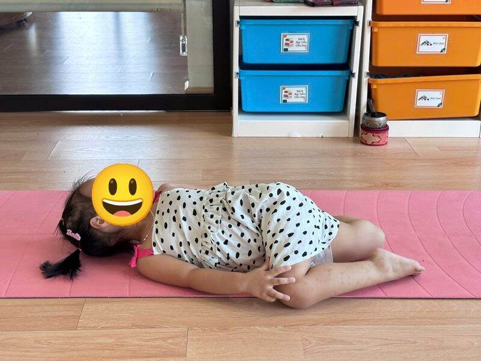
Công chúa ngủ trong rừng
Reclined hero
Cách làm: Ngồi quỳ, hai bàn chân để hai bên hông, từ từ ngả người nằm ngửa ra sau. Nếu bé thấy đau gối thì duỗi chân ra.
Lợi ích: Kéo giãn đùi trước và bụng, giúp bé thư giãn.
🗣️ “Công chúa ngủ thật say, chờ hoàng tử đến.”

Hoa sen tĩnh lặng
Lotus / Easy pose
Cách làm: Ngồi xếp bằng, lưng thẳng, hai tay đặt trên gối, nhắm mắt thở chậm.
Lợi ích: Bé bình tĩnh, tập trung, kết thúc buổi tập thật nhẹ nhàng.
🗣️ “Hít vào hoa nở, thở ra hoa khép.”
Mẹo cho bố mẹ và thầy cô
- Tập lúc bụng không quá no, trên thảm chống trơn, chân trần.
- Ghép 5 đến 6 tư thế thành một câu chuyện ngắn, ví dụ: ngôi sao rơi xuống biển gặp chú cua, cá heo và hải cẩu.
- Luôn kết thúc bằng “Quả trứng ngủ say” và “Hoa sen tĩnh lặng” để bé dịu lại.
Muốn tự tin dạy những tư thế này cho lớp của mình? Tham gia khóa Đào tạo HLV Yoga trẻ em cùng cô Sophia, hoặc nhắn Zalo 0349 270 304.